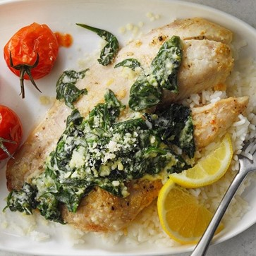

Tilapia Florentine
What is Tilapia Florentine?
A typical Florentine is meat or fish served atop a bed of spinach. We wanted to make it more fun – or at least more tasty – so our spinach is freshened up with creamy ricotta, roasted shallots, and lemon zest. It’s served over the flaky tilapia with a side of almond-tossed green beans and thyme-roasted tomatoes.
Ingredients
1 package (6 ounces) fresh baby spinach
6 teaspoons canola oil, divided
4 tilapia fillets (4 ounces each)
2 tablespoons lemon juice
2 teaspoons garlic-herb seasoning blend
1 large egg, lightly beaten
1/2 cup part-skim ricotta cheese
1/4 cup grated Parmesan cheese
Optional: Lemon wedges and additional grated Parmesan cheese
Instructions / How to Cook
1. Preheat oven to 375°. In a large nonstick skillet, cook spinach in 4 teaspoons oil until wilted; drain. Meanwhile, place tilapia in a greased 13x9-in. baking dish. Drizzle with lemon juice and remaining 2 teaspoons oil. Sprinkle with seasoning blend.
2. In a small bowl, combine the egg, ricotta cheese and spinach; spoon over fillets. Sprinkle with Parmesan cheese.
3. Bake until fish just begins to flake easily with a fork, 15-20 minutes. If desired, serve with lemon wedges and additional Parmesan cheese.